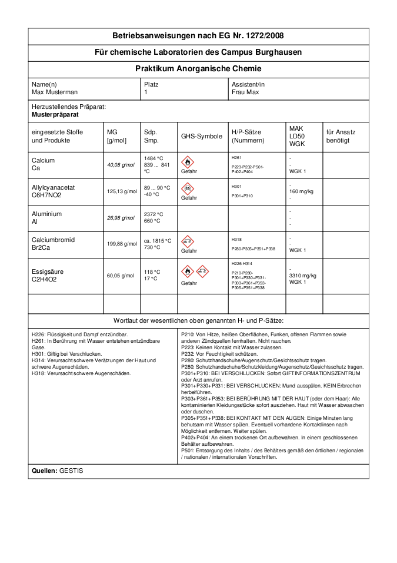
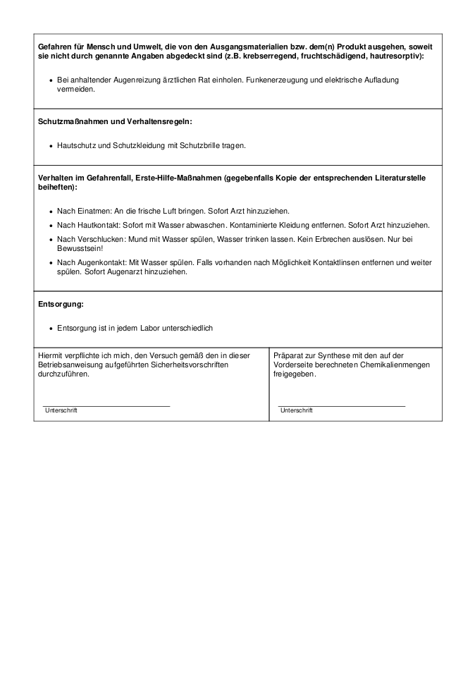

Calciumdibromid - CaBr2
CaBr2 ist ein Programm zur Erstellung von Betriebsanweisungen für Laboreinheiten nach EG Nr. 1272/2008.
Bei CaBr2 handelt es sich um ein Open-Source-Projekt (siehe Lizenz) und daher basiert die Verwendung der generierten Betriebsanweisungen auf Eigenverantwortung.
Die folgenden Bilder zeigen das Programm und mögliche Betriebsanweisungen:
 Betriebsanweisungen dienen im Labor als Informationsquelle für die wichtigen Daten der verwendeten Chemikalien.
Bevor mit unbekannten Stoffen Versuche durchgeführt werden, sollte man über mögliche Gefahren oder Gefährdungen anderer Bescheid wissen.
Falls es zu Unfällen kommen sollte, sind auch Anweisungen darin zu finden, wie man schlimme Verletzungen vermeiden kann. Jedoch sollte zudem sofort fachliche Hilfe geholt werden.
Die Daten zum Befüllen der Betriebsanweisungen beziehen sich auf mehrere Quellen, die individuell in den Einstellungen ausgewählt werden können:
(Die Quellen werden in den folgenden Versionen erweitert)
CaBr2 kann unter Downloads kostenlos heruntergeladen werden.
Genauere Informationen über das Projekt und der Sourcecode ist unter GitHub zu finden.
Unter Anleitung befindet sich eine genaue Beschreibung zu CaBr2 für jedes Feature. Bei Unverständlichkeiten kann dort nachgeschaut werden.
In News werden Neuigkeiten und Neuerungen zu Updates oder wichtige Informationen zu CaBr2 veröffentlicht.